CHƯƠNG 2: CÁC TÁC NHÂN THÔNG MINH
Trong đó chúng ta thảo luận về bản chất của các tác nhân, hoàn hảo hay không, sự đa dạng của
môi trường, và tập hợp các loại tác nhân tương ứng.
Chương này sẽ làm rõ hơn về khái niệm tác nhân hợp lý, một khái niệm trung tâm của trí tuệmà chúng ta đã xác định trong Chương 1. Chúng ta sẽ thấy rằng khái niệm về sự hợp lý có thể được áp dụng cho nhiều loại tác nhân hoạt động trong bất kỳ môi trường nào. Mục tiêu của chúng ta trong cuốn sách này là sử dụng khái niệm này để phát triển một bộ nhỏ các nguyên tắc thiết kế nhằm xây dựng các tác nhân thành công—những hệ thống có thể được gọi là thông minh một cách hợp lý.
Chúng ta sẽ bắt đầu bằng cách xem xét các tác nhân, môi trường và sự liên kết giữa chúng. Việc quan sát thấy một số tác nhân hành xử tốt hơn những tác nhân khác dẫn đến ý tưởng tự nhiên về một tác nhân hợp lý—một tác nhân hành xử tốt nhất có thể. Khả năng hành xử của một tác nhân phụ thuộc vào bản chất của môi trường; một số môi trường khó hơn những môi trường khác. Chúng ta sẽ đưa ra một phân loại sơ bộ về các môi trường và chỉ ra cách các thuộc tính của một môi trường ảnh hưởng đến thiết kế của các tác nhân phù hợp cho môi trường đó. Chúng ta sẽ mô tả một số thiết kế tác nhân “cốt lõi” cơ bản, mà chúng ta sẽ làm rõ trong phần còn lại của cuốn sách.
Tác nhân và Môi trường
Chúng ta sử dụng thuật ngữ tri giác (percept) để chỉ nội dung mà các cảm biến của tác nhân đang nhận thức. Chuỗi tri giác (percept sequence) của một tác nhân là lịch sử hoàn chỉnh của mọi thứ mà tác nhân đã từng nhận thức. Nói chung, sự lựa chọn hành động của một tác nhân tại bất kỳ thời điểm nào có thể phụ thuộc vào kiến thức được xây dựng sẵn và toàn bộ chuỗi tri giác đã quan sát được cho đến nay, nhưng không phải vào bất cứ thứ gì mà nó chưa nhận thức. Bằng cách chỉ định sự lựa chọn hành động của tác nhân cho mọi chuỗi tri giác có thể có, chúng ta đã nói nhiều hay ít mọi thứ cần nói về tác nhân. Về mặt toán học, chúng ta nói rằng hành vi của một tác nhân được mô tả bởi hàm tác nhân (agent function) ánh xạ bất kỳ chuỗi tri giác nào đã cho thành một hành động.
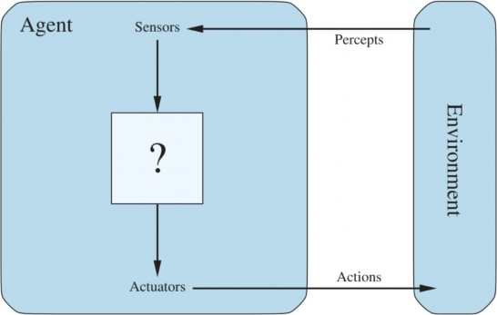
Chúng ta có thể hình dung việc lập bảng hàm tác nhân mô tả bất kỳ tác nhân nào; đối với hầu hết các tác nhân, đây sẽ là một bảng rất lớn—thực tế là vô hạn, trừ khi chúng ta đặt ra một giới hạn về độ dài của các chuỗi tri giác mà chúng ta muốn xem xét. Về nguyên tắc, với một tác nhân để thử nghiệm, chúng ta có thể xây dựng bảng này bằng cách thử tất cả các chuỗi tri giác có thể có và ghi lại các hành động mà tác nhân thực hiện để phản hồi. Bảng, tất nhiên, là một đặc điểm bên ngoài của tác nhân. Bên trong, hàm tác nhân cho một tác nhân nhân tạo sẽ được thực hiện bởi một chương trình tác nhân. Điều quan trọng là phải giữ cho hai ý tưởng này khác biệt. Hàm tác nhânlà một mô tả toán học trừu tượng; chương trình tác nhân là một triển khai cụ thể, chạy trong một hệ thống vật lý nào đó.
Để minh họa những ý tưởng này, chúng ta sử dụng một ví dụ đơn giản—thế giới máy hút bụi, bao gồm một tác nhân máy hút bụi robot trong một thế giới bao gồm các ô vuông có thể bẩn hoặc sạch. Hình 2.2 cho thấy một cấu hình chỉ với hai ô vuông, A và B. Tác nhân hút bụi nhận thức được nó đang ở ô vuông nào và liệu có bụi bẩn trong ô vuông đó hay không. Tác nhân bắt đầu ở ô vuông A. Các hành động có sẵn là di chuyển sang phải, di chuyển sang trái, hút bụi bẩn hoặc không làm gì cả. Một hàm tác nhân rất đơn giản là như sau: nếu ô vuông hiện tại bẩn, thì hút; nếu không, di chuyển đến ô vuông khác. Một bảng một phần của hàm tác nhân này được hiển thị trong Hình
2.3 và một chương trình tác nhân thực hiện nó xuất hiện trong Hình 2.8 trên trang 67.
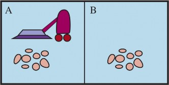
Chuỗi tri giác | Hành động |
[A, Sạch] | Phải |
[A, Bẩn] | Hút |
[B, Sạch] | Trái |
[B, Bẩn] | Hút |
[A, Sạch], [A, Sạch] | Phải |
[A, Sạch], [A, Bẩn] | Hút |
… | … |
[A, Sạch], [A, Sạch], [A, Sạch] | Phải |
[A, Sạch], [A, Sạch], [A, Bẩn] | Hút |
… | … |
Nhìn vào Hình 2.3, chúng ta thấy rằng các tác nhân thế giới hút bụi khác nhau có thể được định nghĩa đơn giản bằng cách điền vào cột bên phải theo nhiều cách khác nhau. Câu hỏi rõ ràng, vậy thì, là: Cách đúng để điền vào bảng là gì? Nói cách khác, điều gì làm cho một tác nhân tốt hay xấu, thông minh hay ngu ngốc? Chúng ta sẽ trả lời những câu hỏi này trong phần tiếp theo.
Trước khi kết thúc phần này, chúng ta nên nhấn mạnh rằng khái niệm tác nhân có nghĩa là một công cụ để phân tích các hệ thống, không phải là một đặc điểm tuyệt đối chia thế giới thành tác nhân và không phải tác nhân. Người ta có thể coi một máy tính cầm tay là một tác nhân chọn hành động hiển thị “4” khi được cho chuỗi tri giác “2 + 2 =,” nhưng một phân tích như vậy khó có thể
giúp chúng ta hiểu về máy tính. Theo một nghĩa nào đó, tất cả các lĩnh vực kỹ thuật có thể được coi là thiết kế các tạo tác tương tác với thế giới; AI hoạt động ở (những gì các tác giả coi là) phần thú vị nhất của phổ, nơi các tạo tác có tài nguyên tính toán đáng kể và môi trường nhiệm vụ đòi hỏi phải ra quyết định không tầm thường.
Hành vi tốt: Khái niệm về tính hợp lý
Một tác nhân hợp lý là một tác nhân làm điều đúng đắn. Rõ ràng, làm điều đúng đắn thì tốt hơn là làm điều sai, nhưng làm điều đúng đắn có nghĩa là gì?
Thước đo hiệu suất
Triết học đạo đức đã phát triển một số khái niệm khác nhau về “điều đúng đắn”, nhưng AI nói chung đã tuân theo một khái niệm được gọi là chủ nghĩa hậu quả (consequentialism): chúng ta đánh giá hành vi của một tác nhân bằng các hậu quả của nó. Khi một tác nhân được đặt vào một môi trường, nó tạo ra một chuỗi các hành động theo các tri giác mà nó nhận được. Chuỗi hành động này khiến môi trường trải qua một chuỗi các trạng thái. Nếu chuỗi đó là mong muốn, thì tác nhân đã thực hiện tốt. Khái niệm về sự mong muốn này được nắm bắt bởi một thước đo hiệu suất(performance measure) đánh giá bất kỳ chuỗi trạng thái môi trường nào đã cho.
Con người có những mong muốn và sở thích của riêng họ, vì vậy khái niệm về sự hợp lý được áp dụng cho con người có liên quan đến sự thành công của họ trong việc chọn các hành động tạo ra các chuỗi trạng thái môi trường mong muốn từ quan điểm của họ. Mặt khác, máy móc không có mong muốn và sở thích của riêng chúng; thước đo hiệu suất, ít nhất là ban đầu, nằm trong tâm trí của người thiết kế máy, hoặc trong tâm trí của những người dùng mà máy được thiết kế cho. Chúng ta sẽ thấy rằng một số thiết kế tác nhân có một biểu diễn rõ ràng về (một phiên bản của) thước đo hiệu suất, trong khi ở các thiết kế khác, thước đo hiệu suất hoàn toàn ngầm định—tác nhân có thể làm điều đúng, nhưng nó không biết tại sao.
Nhớ lại cảnh báo của Norbert Wiener để đảm bảo rằng “mục đích được đưa vào máy là mục đích mà chúng ta thực sự mong muốn” (trang 51), hãy lưu ý rằng việc xây dựng một thước đo hiệu suất một cách chính xác có thể khá khó khăn. Ví dụ, hãy xem xét tác nhân máy hút bụi từ phần trước. Chúng ta có thể đề xuất đo lường hiệu suất bằng lượng bụi bẩn được dọn sạch trong một ca làm việc tám giờ duy nhất. Với một tác nhân hợp lý, tất nhiên, những gì bạn yêu cầu là những gì bạn nhận được. Một tác nhân hợp lý có thể tối đa hóa thước đo hiệu suất này bằng cách dọn sạch bụi bẩn, sau đó đổ tất cả lên sàn, sau đó dọn sạch lại, v.v. Một thước đo hiệu suất phù hợp hơn sẽ thưởng cho tác nhân vì có một sàn nhà sạch sẽ. Ví dụ, một điểm có thể được trao cho mỗi ô vuông sạch ở mỗi bước thời gian (có lẽ với một hình phạt cho điện năng tiêu thụ và tiếng ồn tạo ra). Theo quy tắc chung, tốt hơn là thiết kế các thước đo hiệu suất theo những gì người ta thực sự muốn đạt được trong môi trường, hơn là theo cách người ta nghĩ rằng tác nhân nên hành xử.
Ngay cả khi tránh được những cạm bẫy rõ ràng, một số vấn đề rắc rối vẫn còn. Ví dụ, khái niệm “sàn sạch” trong đoạn trên dựa trên độ sạch trung bình theo thời gian. Tuy nhiên, cùng một độ sạch trung bình có thể đạt được bởi hai tác nhân khác nhau, một tác nhân làm một công việc tầm thường mọi lúc trong khi tác nhân kia dọn dẹp một cách mạnh mẽ nhưng lại nghỉ ngơi dài. Cái nào được
ưa chuộng hơn có vẻ là một điểm tinh tế của khoa học dọn dẹp, nhưng trên thực tế, đó là một câu hỏi triết học sâu sắc với những hàm ý sâu rộng. Cái gì tốt hơn—một cuộc sống liều lĩnh với những thăng trầm, hay một cuộc sống an toàn nhưng tẻ nhạt? Cái gì tốt hơn—một nền kinh tế nơi mọi người sống trong cảnh nghèo khổ vừa phải, hay một nền kinh tế trong đó một số người sống sung túc trong khi những người khác rất nghèo? Chúng tôi để lại những câu hỏi này như một bài tập cho độc giả siêng năng.
Trong phần lớn cuốn sách, chúng ta sẽ giả định rằng thước đo hiệu suất có thể được chỉ định một cách chính xác. Tuy nhiên, vì những lý do đã nêu ở trên, chúng ta phải chấp nhận khả năng rằng chúng ta có thể đưa sai mục đích vào máy—chính xác là vấn đề Vua Midas được mô tả trên trang
51. Hơn nữa, khi thiết kế một phần mềm, các bản sao của nó sẽ thuộc về những người dùng khác nhau, chúng ta không thể đoán trước được sở thích chính xác của từng người dùng. Do đó, chúng ta có thể cần xây dựng các tác nhân phản ánh sự không chắc chắn ban đầu về thước đo hiệu suất thực và tìm hiểu thêm về nó theo thời gian; các tác nhân như vậy được mô tả trong Chương 15, 17 và 23.
Tính hợp lý
Điều gì là hợp lý tại bất kỳ thời điểm nào phụ thuộc vào bốn điều:
Các hành động mà tác nhân có thể thực hiện.
Điều này dẫn đến một định nghĩa về một tác nhân hợp lý:
Đối với mỗi chuỗi tri giác có thể có, một tác nhân hợp lý nên chọn một hành động được kỳ vọng sẽ tối đa hóa thước đo hiệu suất của nó, dựa trên bằng chứng được cung cấp bởi chuỗi tri giác và bất kỳ kiến thức được xây dựng sẵn nào mà tác nhân có.
Hãy xem xét tác nhân máy hút bụi đơn giản làm sạch một ô vuông nếu nó bẩn và di chuyển đến ô vuông khác nếu không; đây là hàm tác nhân được lập bảng trong Hình 2.3. Đây có phải là một tác nhân hợp lý không? Điều đó còn tùy! Đầu tiên, chúng ta cần nói thước đo hiệu suất là gì, những gì được biết về môi trường, và tác nhân có những cảm biến và bộ truyền động nào. Hãy giả sử những điều sau:
Thước đo hiệu suất thưởng một điểm cho mỗi ô vuông sạch ở mỗi bước thời gian, trong suốt “vòng đời” 1000 bước thời gian.
“Địa lý” của môi trường được biết trước (Hình 2.2) nhưng sự phân bố bụi bẩn và vị trí ban đầu của tác nhân thì không. Các ô vuông sạch vẫn sạch và việc hút sẽ làm sạch ô vuông hiện tại. Các hành động Phải và Trái di chuyển tác nhân một ô vuông trừ khi điều này sẽ đưa tác nhân ra ngoài môi trường, trong trường hợp đó tác nhân vẫn ở vị trí cũ.
Các hành động duy nhất có sẵn là Phải, Trái và Hút.
Tác nhân nhận thức chính xác vị trí của nó và liệu vị trí đó có chứa bụi bẩn hay không.
Trong những trường hợp này, tác nhân thực sự là hợp lý; hiệu suất kỳ vọng của nó ít nhất cũng tốt bằng bất kỳ tác nhân nào khác.
Người ta có thể dễ dàng thấy rằng cùng một tác nhân sẽ là phi lý trong những trường hợp khác nhau. Ví dụ, một khi tất cả bụi bẩn được dọn sạch, tác nhân sẽ dao động không cần thiết qua lại; nếu thước đo hiệu suất bao gồm một hình phạt một điểm cho mỗi lần di chuyển, tác nhân sẽ hoạt động kém. Một tác nhân tốt hơn cho trường hợp này sẽ không làm gì cả một khi nó chắc chắn rằng tất cả các ô vuông đều sạch. Nếu các ô vuông sạch có thể bị bẩn lại, tác nhân nên thỉnh thoảng kiểm tra và làm sạch lại chúng nếu cần. Nếu địa lý của môi trường không được biết, tác nhân sẽ cần khám phá nó. Bài tập 2.VACR yêu cầu bạn thiết kế các tác nhân cho những trường hợp này.
Toàn tri, học tập và tự chủ
Chúng ta cần cẩn thận để phân biệt giữa tính hợp lý và tính toàn tri. Một tác nhân toàn tri biết kết quả thực tế của các hành động của nó và có thể hành động phù hợp; nhưng tính toàn tri là không thể trong thực tế. Hãy xem xét ví dụ sau: Một ngày nọ, tôi đang đi bộ dọc theo đại lộ Champs-Élysées và tôi thấy một người bạn cũ ở bên kia đường. Không có giao thông gần đó và tôi không bận việc gì khác, vì vậy, là người hợp lý, tôi bắt đầu băng qua đường. Trong khi đó, ở độ cao 33.000 feet, một cánh cửa hàng hóa rơi ra khỏi một máy bay phản lực đang bay qua và trước khi tôi sang được bên kia đường, tôi bị đè bẹp. Tôi có phải là phi lý khi băng qua đường không? Không đời nào, không thể có chuyện cáo phó của tôi ghi là “Kẻ ngốc cố băng qua đường” được.
Ví dụ này cho thấy rằng tính hợp lý không giống với sự hoàn hảo. Tính hợp lý tối đa hóa hiệu suất kỳ vọng, trong khi sự hoàn hảo tối đa hóa hiệu suất thực tế. Rút lui khỏi yêu cầu về sự hoàn hảo không chỉ là một câu hỏi về sự công bằng đối với các tác nhân. Vấn đề là nếu chúng ta mong đợi một tác nhân làm những gì hóa ra sau đó là hành động tốt nhất, sẽ không thể thiết kế một tác nhân để thực hiện đặc điểm kỹ thuật này—trừ khi chúng ta cải thiện hiệu suất của quả cầu pha lê hoặc cỗ máy thời gian.
Định nghĩa của chúng ta về tính hợp lý không yêu cầu sự toàn tri, bởi vì sự lựa chọn hợp lý chỉ phụ thuộc vào chuỗi tri giác cho đến nay. Chúng ta cũng phải đảm bảo rằng chúng ta đã không vô tình cho phép tác nhân tham gia vào các hoạt động kém thông minh một cách dứt khoát. Ví dụ, nếu một tác nhân không nhìn cả hai bên trước khi băng qua một con đường đông đúc, thì chuỗi tri giác của nó sẽ không cho nó biết rằng có một chiếc xe tải lớn đang lao tới với tốc độ cao. Định nghĩa của chúng ta về tính hợp lý có nói rằng bây giờ có thể băng qua đường không? Hoàn toàn không!
Đầu tiên, sẽ không hợp lý để băng qua đường với chuỗi tri giác không có thông tin này: rủi ro tai nạn do băng qua mà không nhìn là quá lớn. Thứ hai, một tác nhân hợp lý nên chọn hành động “nhìn” trước khi bước xuống đường, bởi vì việc nhìn giúp tối đa hóa hiệu suất kỳ vọng. Thực hiện các hành động để sửa đổi các tri giác trong tương lai—đôi khi được gọi là thu thập thông tin— là một phần quan trọng của tính hợp lý và được đề cập chuyên sâu trong Chương 15. Một ví dụ thứ hai về việc thu thập thông tin được cung cấp bởi việc khám phá mà một tác nhân dọn dẹp hút bụi phải thực hiện trong một môi trường ban đầu không xác định.
Định nghĩa của chúng ta yêu cầu một tác nhân hợp lý không chỉ thu thập thông tin mà còn họccàng nhiều càng tốt từ những gì nó nhận thức. Cấu hình ban đầu của tác nhân có thể phản ánh một số kiến thức ban đầu về môi trường, nhưng khi tác nhân có kinh nghiệm, điều này có thể được sửa đổi và bổ sung. Có những trường hợp cực đoan trong đó môi trường được biết hoàn toàn từ trước và hoàn toàn có thể dự đoán được. Trong những trường hợp như vậy, tác nhân không cần phải nhận thức hoặc học hỏi; nó chỉ đơn giản là hành động một cách chính xác.
Tất nhiên, những tác nhân như vậy rất mong manh. Hãy xem con bọ hung hèn mọn. Sau khi đào tổ và đẻ trứng, nó lấy một viên phân từ một đống gần đó để bịt lối vào. Nếu viên phân bị lấy khỏi tay nó trên đường đi, con bọ hung vẫn tiếp tục nhiệm vụ của mình và diễn kịch bịt tổ bằng viên phân không tồn tại, không bao giờ nhận thấy rằng nó đã biến mất. Sự tiến hóa đã xây dựng một giả định vào hành vi của con bọ hung, và khi giả định đó bị vi phạm, hành vi không thành công sẽ xảy ra.
Thông minh hơn một chút là con ong bắp cày sphex. Con ong cái sphex sẽ đào một cái hang, đi ra ngoài và chích một con sâu bướm rồi kéo nó đến cái hang, vào lại cái hang để kiểm tra mọi thứ đều ổn, kéo con sâu bướm vào bên trong và đẻ trứng. Con sâu bướm đóng vai trò là nguồn thức ăn khi trứng nở. Cho đến nay thì tốt, nhưng nếu một nhà côn trùng học di chuyển con sâu bướm cách đó vài inch trong khi con sphex đang kiểm tra, nó sẽ quay lại bước “kéo con sâu bướm” của kế hoạch và sẽ tiếp tục kế hoạch mà không sửa đổi, kiểm tra lại cái hang, ngay cả sau hàng chục lần can thiệp di chuyển sâu bướm. Con sphex không thể học rằng kế hoạch bẩm sinh của nó đang thất bại, và do đó sẽ không thay đổi nó.
Ở mức độ mà một tác nhân dựa vào kiến thức ban đầu của nhà thiết kế hơn là vào các quá trình tri giác và học tập của chính nó, chúng ta nói rằng tác nhân đó thiếu tính tự chủ. Một tác nhân hợp lý nên tự chủ—nó nên học những gì có thể để bù đắp cho kiến thức ban đầu không đầy đủ hoặc không chính xác. Ví dụ, một tác nhân dọn dẹp hút bụi học cách dự đoán bụi bẩn bổ sung sẽ xuất hiện ở đâu và khi nào sẽ làm tốt hơn một tác nhân không làm như vậy.
Như một vấn đề thực tế, người ta hiếm khi yêu cầu sự tự chủ hoàn toàn ngay từ đầu: khi tác nhân có ít hoặc không có kinh nghiệm, nó sẽ phải hành động ngẫu nhiên trừ khi nhà thiết kế cung cấp một số trợ giúp. Giống như sự tiến hóa cung cấp cho động vật đủ phản xạ bẩm sinh để sống sót đủ lâu để tự học, sẽ là hợp lý để cung cấp cho một tác nhân thông minh nhân tạo một số kiến thức ban đầu cũng như khả năng học hỏi. Sau khi có đủ kinh nghiệm về môi trường của nó, hành vi của một tác nhân hợp lý có thể trở nên độc lập một cách hiệu quả với kiến thức ban đầu của nó. Do đó, việc kết hợp học tập cho phép người ta thiết kế một tác nhân hợp lý duy nhất sẽ thành công trong một loạt các môi trường rộng lớn.
Bản chất của Môi trường
Bây giờ chúng ta đã có một định nghĩa về tính hợp lý, chúng ta gần như đã sẵn sàng để suy nghĩ về việc xây dựng các tác nhân hợp lý. Tuy nhiên, trước tiên, chúng ta phải nghĩ về các môi trường, về cơ bản là những “bài toán” mà các tác nhân hợp lý là “giải pháp.” Chúng ta bắt đầu bằng cách chỉ ra cách chỉ định một môi trường tác vụ, minh họa quy trình bằng một số ví dụ. Sau đó, chúng ta sẽ chỉ ra rằng các môi trường tác vụ có nhiều loại khác nhau. Bản chất của môi trường tác vụ ảnh hưởng trực tiếp đến thiết kế chương trình tác nhân phù hợp cho môi trường đó.
Chỉ định môi trường tác vụ
Trong cuộc thảo luận về tính hợp lý của tác nhân máy hút bụi đơn giản, chúng ta đã phải chỉ định thước đo hiệu suất, môi trường, và các bộ truyền động và cảm biến của tác nhân. Chúng ta nhóm tất cả những điều này dưới tiêu đề của môi trường tác vụ. Đối với những người thích từ viết tắt, chúng ta gọi đây là mô tả PEAS (Performance, Environment, Actuators, Sensors) – Hiệu suất, Môi trường, Bộ truyền động, Cảm biến. Khi thiết kế một tác nhân, bước đầu tiên phải luôn là chỉ định môi trường tác vụ càng đầy đủ càng tốt.
Thế giới máy hút bụi là một ví dụ đơn giản; hãy xem xét một vấn đề phức tạp hơn: một tài xế taxi. Hình 2.4 tóm tắt mô tả PEAS cho môi trường tác vụ của taxi. Chúng ta sẽ thảo luận chi tiết hơn về từng yếu tố trong các đoạn sau.
Đầu tiên, thước đo hiệu suất mà chúng ta muốn tài xế tự động của mình hướng tới là gì? Các phẩm chất đáng mong muốn bao gồm: đến đúng đích; giảm thiểu tiêu thụ nhiên liệu và hao mòn; giảm thiểu thời gian hoặc chi phí chuyến đi; giảm thiểu vi phạm luật giao thông và sự làm phiền đối với các tài xế khác; tối đa hóa an toàn và sự thoải mái của hành khách; tối đa hóa lợi nhuận. Rõ ràng, một số mục tiêu này xung đột với nhau, vì vậy sẽ cần phải có sự đánh đổi.
Tiếp theo, môi trường lái xe mà taxi sẽ phải đối mặt là gì? Bất kỳ tài xế taxi nào cũng phải đối phó với nhiều loại đường khác nhau, từ làn đường nông thôn và ngõ hẻm đô thị đến đường cao tốc 12 làn. Các con đường có các phương tiện giao thông khác, người đi bộ, động vật đi lạc, công trình đường bộ, xe cảnh sát, vũng nước và ổ gà. Taxi cũng phải tương tác với hành khách tiềm năng và hành khách thực tế. Cũng có một số lựa chọn tùy chọn. Taxi có thể cần hoạt động ở Nam California, nơi tuyết hiếm khi là vấn đề, hoặc ở Alaska, nơi nó hiếm khi không phải là vấn đề. Nó có thể luôn lái ở bên phải, hoặc chúng ta có thể muốn nó đủ linh hoạt để lái ở bên trái khi ở Anh hoặc Nhật Bản. Rõ ràng, môi trường càng bị hạn chế, vấn đề thiết kế càng dễ dàng.
Hiệu suất | An toàn, đến đích, lợi nhuận, hợp pháp, thoải mái |
Môi trường | Đường bộ, các phương tiện khác, cảnh sát, người đi bộ, khách hàng, thời tiết |
Bộ truyền động | Vô lăng, bàn đạp ga, phanh, đèn xi nhan, còi, màn hình hiển thị, giọng nói |
Cảm biến | Camera, radar, đồng hồ tốc độ, GPS, cảm biến động cơ, gia tốc kế, micro, màn hình cảm ứng |
Các bộ truyền động cho một taxi tự động bao gồm những thứ có sẵn cho một tài xế con người: điều khiển động cơ thông qua bàn đạp ga và điều khiển vô lăng và phanh. Ngoài ra, nó sẽ cần đầu ra cho màn hình hiển thị hoặc bộ tổng hợp giọng nói để nói chuyện lại với hành khách, và có lẽ một số cách để giao tiếp với các phương tiện khác, một cách lịch sự hoặc không.
Các cảm biến cơ bản cho taxi sẽ bao gồm một hoặc nhiều camera video để nó có thể nhìn thấy, cũng như cảm biến lidar và siêu âm để phát hiện khoảng cách đến các xe khác và chướng ngại vật. Để tránh vé phạt chạy quá tốc độ, taxi nên có đồng hồ tốc độ, và để điều khiển phương tiện một cách thích hợp, đặc biệt là ở các khúc cua, nó nên có gia tốc kế. Để xác định trạng thái cơ học của phương tiện, nó sẽ cần một loạt các cảm biến động cơ, nhiên liệu và hệ thống điện thông thường. Giống như nhiều tài xế con người, nó có thể muốn truy cập tín hiệu GPS để không bị lạc. Cuối cùng, nó sẽ cần đầu vào màn hình cảm ứng hoặc giọng nói để hành khách yêu cầu một điểm đến.
Trong Hình 2.5, chúng ta đã phác thảo các yếu tố PEAS cơ bản cho một số loại tác nhân bổ sung. Các ví dụ khác xuất hiện trong Bài tập 2.PEAS. Các ví dụ bao gồm môi trường vật lý cũng như ảo. Lưu ý rằng các môi trường tác vụ ảo có thể phức tạp như thế giới “thực”: ví dụ, một tác nhân(hoặc robot phần mềm hay softbot) giao dịch trên các trang web đấu giá và bán lại đối phó với hàng triệu người dùng khác và hàng tỷ đối tượng, nhiều đối tượng có hình ảnh thực.
Các thuộc tính của môi trường tác vụ
Phạm vi của các môi trường tác vụ có thể phát sinh trong AI rõ ràng là rất lớn. Tuy nhiên, chúng ta có thể xác định một số ít các chiều mà theo đó các môi trường tác vụ có thể được phân loại. Các chiều này xác định, ở một mức độ lớn, thiết kế tác nhân phù hợp và khả năng áp dụng của từng họ kỹ thuật chính để triển khai tác nhân. Đầu tiên, chúng ta liệt kê các chiều, sau đó chúng ta phân tích một số môi trường tác vụ để minh họa các ý tưởng. Các định nghĩa ở đây là không chính thức; các chương sau sẽ cung cấp các tuyên bố và ví dụ chính xác hơn về từng loại môi trường.
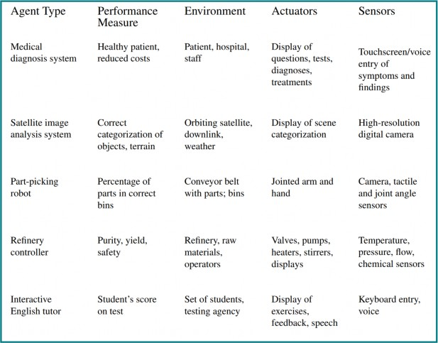
cạnh tranh, hành vi ngẫu nhiên là hợp lý vì nó tránh được những cạm bẫy của tính có thể dự đoán.
xe taxi cũng là liên tục (góc lái, v.v.). Đầu vào từ camera kỹ thuật số là rời rạc, nói một cách nghiêm túc, nhưng thường được coi là đại diện cho các cường độ và vị trí thay đổi liên tục.
Trường hợp khó nhất là có thể quan sát một phần, nhiều tác nhân, không xác định, tuần tự,. Lái xe taxi khó ở tất cả những khía cạnh này, ngoại trừ việc môi trường của tài xế hầu hết là đã biết. Lái một chiếc xe thuê ở một quốc gia mới với địa lý không quen thuộc, luật giao thông khác nhau và hành khách lo lắng thì thú vị hơn nhiều.
Hình 2.6 liệt kê các thuộc tính của một số môi trường quen thuộc. Lưu ý rằng các thuộc tính không phải lúc nào cũng rõ ràng. Ví dụ, chúng ta đã liệt kê tác vụ chẩn đoán y tế là một tác nhân vì quá trình bệnh trong một bệnh nhân không được mô hình hóa một cách có lợi như một tác nhân; nhưng một hệ thống chẩn đoán y tế cũng có thể phải đối phó với những bệnh nhân ương ngạnh và nhân viên hoài nghi, vì vậy môi trường có thể có một khía cạnh nhiều tác nhân. Hơn nữa, chẩn đoán y tế là tập hợp nếu người ta hình dung tác vụ là chọn một chẩn đoán dựa trên một danh sách các triệu chứng; vấn đề là tuần tự nếu tác vụ có thể bao gồm việc đề xuất một loạt các xét nghiệm, đánh giá tiến độ trong quá trình điều trị, xử lý nhiều bệnh nhân, v.v.
Môi trường tác vụ |
Có thể quan sát |
Tác nhân |
Xác định |
Tập hợp |
Tĩnh |
Rời rạc |
Câu đố ô chữ | Hoàn toàn | Một | Xác định | Tuần tự | Tĩnh | Rời rạc |
Cờ vua có đồng hồ | Hoàn toàn | Nhiều | Xác định | Tuần tự | Bán động | Rời rạc |
Môi trường tác vụ |
Có thể quan sát |
Tác nhân |
Xác định |
Tập hợp |
Tĩnh |
Rời rạc |
Poker | Một phần | Nhiều | Stochastic | Tuần tự | Tĩnh | Rời rạc |
Backgamm on | Hoàn toàn | Nhiều | Stochastic | Tuần tự | Tĩnh | Rời rạc |
Lái xe taxi | Một phần | Nhiều | Stochastic | Tuần tự | Động | Liên tục |
Chẩn đoán y tế | Một phần | Một | Stochastic | Tuần tự | Động | Liên tục |
Phân tích hình ảnh | Hoàn toàn | Một | Xác định | Tập hợp | Bán động | Liên tục |
Robot nhặt bộ phận | Một phần | Một | Stochastic | Tập hợp | Động | Liên tục |
Bộ điều khiển nhà máy lọc dầu | Một phần | Một | Stochastic | Tuần tự | Động | Liên tục |
Gia sư tiếng Anh | Một phần | Nhiều | Stochastic | Tuần tự | Động | Rời rạc |
Chúng ta đã không bao gồm cột “đã biết/chưa biết” vì, như đã giải thích ở trên, đây không hẳn là một thuộc tính của môi trường. Đối với một số môi trường, chẳng hạn như cờ vua và poker, việc cung cấp cho tác nhân kiến thức đầy đủ về các quy tắc là khá dễ dàng, nhưng dù sao đi nữa, việc xem xét một tác nhân có thể học cách chơi các trò chơi này mà không có kiến thức đó là điều thú vị. Kho lưu trữ mã liên quan đến cuốn sách này (aima.cs.berkeley.edu) bao gồm nhiều triển khai môi trường, cùng với một trình mô phỏng môi trường đa năng để đánh giá hiệu suất của tác nhân. Các thí nghiệm thường được thực hiện không phải cho một môi trường duy nhất mà cho nhiều môi trường được lấy từ một lớp môi trường. Ví dụ, để đánh giá một tài xế taxi trong giao thông mô phỏng, chúng ta sẽ muốn chạy nhiều mô phỏng với các điều kiện giao thông, ánh sáng và thời tiết khác nhau. Sau đó, chúng ta quan tâm đến hiệu suất trung bình của tác nhân trên lớp môi trường.
Cấu trúc của tác nhân
Cho đến nay, chúng ta đã nói về các tác nhân bằng cách mô tả hành vi—hành động được thực hiện sau bất kỳ chuỗi tri giác nào. Bây giờ, chúng ta phải đi sâu vào cách thức hoạt động bên trong của chúng. Nhiệm vụ của AI là thiết kế một chương trình tác nhân (agent program) để thực hiện hàm(agent function)—ánh xạ từ tri giác đến hành động. Chúng ta giả định chương trình này sẽ chạy trên một thiết bị máy tính nào đó với các cảm biến và bộ truyền động vật lý—chúng ta gọi đây là kiến trúc tác nhân (agent architecture). .
tác nhân = kiến trúc + chương trình.
Rõ ràng, chương trình chúng ta chọn phải phù hợp với kiến trúc. Nếu chương trình đưa ra các hành động như Đi bộ, thì kiến trúc cần có chân. Kiến trúc có thể chỉ là một máy tính thông thường, hoặc có thể là một chiếc xe robot với nhiều máy tính, camera và cảm biến khác trên bo mạch. Nói chung, kiến trúc làm cho tri giác từ các cảm biến sẵn có cho chương trình, chạy chương trình và đưa các lựa chọn hành động của chương trình đến bộ truyền động khi chúng được tạo ra. Hầu hết cuốn sách này là về việc thiết kế các chương trình tác nhân, mặc dù Chương 26 và 27 sẽ đề cập trực tiếp đến các cảm biến và bộ truyền động.
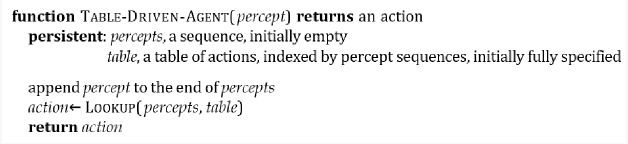
hành động mỗi lần. Nó giữ lại toàn bộ chuỗi tri giác trong bộ nhớ.
Các chương trình tác nhân
Các chương trình tác nhân mà chúng ta thiết kế trong cuốn sách này đều có cùng một khung sườn: chúng nhận tri giác hiện tại làm đầu vào từ các cảm biến và trả về một hành động cho các bộ truyền động.
Hãy chú ý sự khác biệt giữa chương trình tác nhân, chỉ lấy tri giác hiện tại làm đầu vào, và hàm, có thể phụ thuộc vào toàn bộ lịch sử tri giác. Chương trình tác nhân không có lựa chọn nào khác ngoài việc chỉ lấy tri giác hiện tại làm đầu vào vì không có gì khác có sẵn từ môi trường; nếu các hành động của tác nhân cần phụ thuộc vào toàn bộ chuỗi tri giác, tác nhân sẽ phải ghi nhớcác tri giác.
Chúng tôi mô tả các chương trình tác nhân bằng ngôn ngữ giả mã đơn giản được định nghĩa trong Phụ lục B. (Kho lưu trữ mã trực tuyến chứa các triển khai bằng các ngôn ngữ lập trình thực.) Ví dụ, Hình 2.7 cho thấy một chương trình tác nhân khá đơn giản theo dõi chuỗi tri giác và sau đó sử dụng nó để tra cứu vào một bảng các hành động để quyết định phải làm gì. Bảng này—một ví dụ được đưa ra cho thế giới máy hút bụi trong Hình 2.3—biểu diễn một cách rõ ràng hàm tác nhân mà chương trình tác nhân thể hiện. Để xây dựng một tác nhân hợp lý theo cách này, chúng ta với tư cách là những nhà thiết kế phải xây dựng một bảng chứa hành động thích hợp cho mọi chuỗi tri giác có thể xảy ra.
Việc xem xét tại sao cách tiếp cận xây dựng tác nhân dựa trên bảng lại chắc chắn thất bại là điều hữu ích. Gọi 𝑃 là tập hợp các tri giác có thể và 𝑇 là thời gian sống của tác nhân (tổng số tri giác nó sẽ nhận được). Bảng tra cứu sẽ chứa 𝑠𝑢𝑚𝑡 = 1𝑇 ∣ 𝑃 ∣𝑡 mục nhập. Hãy xem xét một chiếc taxi tự động: đầu vào hình ảnh từ một camera duy nhất (tám camera là điển hình) đến với tốc độ khoảng 70 megabyte mỗi giây (30 khung hình mỗi giây, 1080 × 720 pixel với 24 bit thông tin màu). Điều này mang lại một bảng tra cứu với hơn 10600,000,000,000 mục nhập cho một giờ lái xe. Ngay cả
bảng tra cứu cho cờ vua—một phần nhỏ, hoạt động tốt của thế giới thực—cũng có ít nhất 10150
mục nhập. Trong khi đó, số nguyên tử trong vũ trụ có thể quan sát được chưa đến 1080 .
Kích thước khổng lồ của các bảng này có nghĩa là (a) không có tác nhân vật lý nào trong vũ trụ này có đủ không gian để lưu trữ bảng; (b) nhà thiết kế sẽ không có thời gian để tạo bảng; và (c) không có tác nhân nào có thể học được tất cả các mục nhập bảng đúng từ kinh nghiệm của nó.
Mặc dù vậy, TABLE-DRIVEN-AGENT vẫn làm được điều chúng ta muốn, giả sử bảng đã được điền đúng: nó thực hiện hàm tác nhân mong muốn.
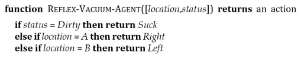
Thách thức chính đối với AI là tìm ra cách viết các chương trình mà, trong chừng mực có thể, tạo ra hành vi hợp lý từ một chương trình nhỏ thay vì từ một bảng khổng lồ.
Chúng ta có nhiều ví dụ cho thấy điều này có thể được thực hiện thành công trong các lĩnh vực khác: ví dụ, các bảng căn bậc hai khổng lồ được các kỹ sư và học sinh sử dụng trước những năm 1970 giờ đây đã được thay thế bằng một chương trình năm dòng cho phương pháp Newton chạy trên máy tính điện tử. Câu hỏi đặt ra là, liệu AI có thể làm cho hành vi thông minh nói chung những gì Newton đã làm cho căn bậc hai không? Chúng tôi tin rằng câu trả lời là có.
Trong phần còn lại của phần này, chúng ta sẽ phác thảo bốn loại chương trình tác nhân cơ bản thể hiện các nguyên tắc làm nền tảng cho hầu hết các hệ thống thông minh:
Mỗi loại chương trình tác nhân kết hợp các thành phần cụ thể theo những cách cụ thể để tạo ra các hành động. Phần 2.4.6 giải thích một cách tổng quát cách chuyển đổi tất cả các tác nhân này thành tác nhân học tập (learning agents) có thể cải thiện hiệu suất của các thành phần của chúng để tạo ra các hành động tốt hơn. Cuối cùng, Phần 2.4.7 mô tả nhiều cách mà bản thân các thành phần có thể được biểu diễn bên trong tác nhân. Sự đa dạng này cung cấp một nguyên tắc tổ chức chính cho lĩnh vực này và cho chính cuốn sách.
Tác nhân phản xạ đơn giản
Loại tác nhân đơn giản nhất là tác nhân phản xạ đơn giản. Những tác nhân này chọn hành động dựa trên tri giác hiện tại, bỏ qua phần còn lại của lịch sử tri giác. Ví dụ, tác nhân máy hút bụi có hàm tác nhân được lập bảng trong Hình 2.3 là một tác nhân phản xạ đơn giản, bởi vì quyết định của nó chỉ dựa trên vị trí hiện tại và liệu vị trí đó có chứa bụi bẩn hay không. Một chương trình tác nhân cho tác nhân này được thể hiện trong Hình 2.8.
Hãy chú ý rằng chương trình tác nhân máy hút bụi rất nhỏ so với bảng tương ứng. Sự giảm đáng kể nhất đến từ việc bỏ qua lịch sử tri giác, làm giảm số lượng chuỗi tri giác liên quan từ 4𝑇 xuống chỉ còn 4. Một sự giảm nhỏ hơn nữa đến từ thực tế là khi ô hiện tại bẩn, hành động không phụ thuộc vào vị trí. Mặc dù chúng ta đã viết chương trình tác nhân bằng cách sử dụng các câu lệnh if- then-else, nó đủ đơn giản để cũng có thể được triển khai dưới dạng một mạch Boolean.
Các hành vi phản xạ đơn giản cũng xảy ra trong các môi trường phức tạp hơn. Hãy tưởng tượng bạn là người lái chiếc taxi tự động. Nếu chiếc xe phía trước phanh và đèn phanh của nó bật sáng, bạn nên nhận thấy điều này và bắt đầu phanh. Nói cách khác, một số xử lý được thực hiện trên đầu vào hình ảnh để thiết lập điều kiện mà chúng ta gọi là “Chiếc xe phía trước đang phanh.” Sau đó, điều này kích hoạt một kết nối đã được thiết lập trong chương trình tác nhân đến hành động “bắt đầu phanh.” Chúng ta gọi kết nối như vậy là một quy tắc điều kiện-hành động (condition–action rule), được viết là:
nếu chiếc-xe-phía-trước-đang-phanh thì bắt-đầu-phanh.
Con người cũng có nhiều kết nối như vậy, một số là phản ứng học được (như khi lái xe) và một số là phản xạ bẩm sinh (như chớp mắt khi có thứ gì đó đến gần mắt). Trong suốt cuốn sách, chúng ta sẽ chỉ ra một số cách khác nhau để các kết nối như vậy có thể được học và triển khai.
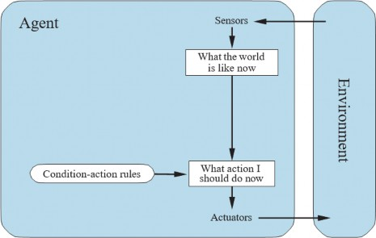
Chương trình trong Hình 2.8 là cụ thể cho một môi trường máy hút bụi cụ thể. Một cách tiếp cận tổng quát và linh hoạt hơn là trước tiên xây dựng một trình thông dịch đa năng cho các quy tắc điều kiện-hành động và sau đó tạo các bộ quy tắc cho các môi trường tác vụ cụ thể. Hình 2.9 đưa ra cấu trúc của chương trình tổng quát này dưới dạng sơ đồ, cho thấy cách các quy tắc điều kiện- hành động cho phép tác nhân tạo kết nối từ tri giác đến hành động. Đừng lo lắng nếu điều này có vẻ tầm thường; nó sẽ trở nên thú vị hơn ngay sau đây.
Một chương trình tác nhân cho Hình 2.9 được thể hiện trong Hình 2.10. Hàm INTERPRET-tạo ra một mô tả trừu tượng của trạng thái hiện tại từ tri giác, và hàm RULE-MATCH trả về quy tắc đầu tiên trong bộ quy tắc khớp với mô tả trạng thái đã cho. Lưu ý rằng mô tả về “quy tắc” và “khớp” chỉ mang tính khái niệm; như đã lưu ý ở trên, các triển khai thực tế có thể đơn giản như một tập hợp các cổng logic thực hiện một mạch Boolean. Ngoài ra, một mạch “thần kinh” có thể được sử dụng, trong đó các cổng logic được thay thế bằng các đơn vị phi tuyến của mạng nơ- ron nhân tạo (xem Chương 22).
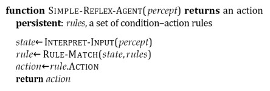
Các tác nhân phản xạ đơn giản có thuộc tính đáng ngưỡng mộ là đơn giản, nhưng chúng có trí thông minh hạn chế. Tác nhân trong Hình 2.10 sẽ chỉ hoạt động nếu quyết định đúng có thể được đưa ra chỉ dựa trên tri giác hiện tại—nghĩa là, chỉ khi môi trường có thể quan sát đầy đủ.
Ngay cả một chút không thể quan sát cũng có thể gây ra rắc rối nghiêm trọng. Ví dụ, quy tắc phanh được đưa ra trước đó giả định rằng điều kiện chiếc-xe-phía-trước-đang-phanh có thể được xác định từ tri giác hiện tại—một khung hình video duy nhất. Điều này hoạt động nếu chiếc xe phía trước có một đèn phanh gắn ở trung tâm (và do đó có thể nhận dạng duy nhất). Thật không may, các mẫu cũ hơn có các cấu hình đèn hậu, đèn phanh và đèn xi-nhan khác nhau, và không phải lúc nào cũng có thể biết từ một hình ảnh duy nhất liệu chiếc xe đang phanh hay chỉ bật đèn hậu. Một tác nhân phản xạ đơn giản lái xe phía sau một chiếc xe như vậy sẽ hoặc phanh liên tục và không cần thiết, hoặc tệ hơn, không bao giờ phanh.
Chúng ta có thể thấy một vấn đề tương tự nảy sinh trong thế giới máy hút bụi. Giả sử một tác nhân máy hút bụi phản xạ đơn giản bị tước cảm biến vị trí và chỉ có cảm biến bụi bẩn. Một tác nhân như vậy chỉ có hai tri giác có thể: [Bẩn] và [Sạch]. Nó có thể Hút để đáp lại [Bẩn]; vậy nó nên làm gì để đáp lại [Sạch]? Di chuyển sang Trái sẽ thất bại (mãi mãi) nếu nó bắt đầu ở ô A, và di chuyển sang
Phải sẽ thất bại (mãi mãi) nếu nó bắt đầu ở ô B. Vòng lặp vô hạn thường là không thể tránh khỏi
đối với các tác nhân phản xạ đơn giản hoạt động trong các môi trường có thể quan sát một phần.
Thoát khỏi các vòng lặp vô hạn là có thể nếu tác nhân có thể ngẫu nhiên hóa các hành động của nó. Ví dụ, nếu tác nhân máy hút bụi nhận thấy [Sạch], nó có thể tung đồng xu để chọn giữa Phải và Trái. Dễ dàng chỉ ra rằng tác nhân sẽ đến được ô kia trong trung bình hai bước. Sau đó, nếu ô đó bẩn, tác nhân sẽ dọn dẹp nó và nhiệm vụ sẽ hoàn thành. Do đó, một tác nhân phản xạ đơn giản ngẫu nhiên hóa có thể vượt trội hơn một tác nhân phản xạ đơn giản có tính xác định.
Chúng ta đã đề cập trong Phần 2.3 rằng hành vi ngẫu nhiên hóa đúng cách có thể hợp lý trong một số môi trường đa tác nhân. Trong các môi trường đơn tác nhân, ngẫu nhiên hóa thường không hợp lý. Đó là một mẹo hữu ích giúp một tác nhân phản xạ đơn giản trong một số tình huống, nhưng trong hầu hết các trường hợp, chúng ta có thể làm tốt hơn nhiều với các tác nhân xác định tinh vi hơn.
Tác nhân phản xạ dựa trên mô hình
Cách hiệu quả nhất để xử lý khả năng quan sát một phần là để tác nhân theo dõi phần thế giới mà nó không thể nhìn thấy ngay lúc này. Tức là, tác nhân nên duy trì một loại trạng thái nội bộ(internal state) nào đó phụ thuộc vào lịch sử tri giác và từ đó phản ánh ít nhất một số khía cạnh không được quan sát của trạng thái hiện tại. Đối với vấn đề phanh, trạng thái nội bộ không quá rộng—chỉ là khung hình trước đó từ camera, cho phép tác nhân phát hiện khi hai đèn đỏ ở rìa xe bật hoặc tắt cùng lúc. Đối với các tác vụ lái xe khác như chuyển làn, tác nhân cần theo dõi vị trí của các xe khác nếu nó không thể nhìn thấy tất cả cùng một lúc. Và để việc lái xe có thể diễn ra, tác nhân cần theo dõi chìa khóa của nó đang ở đâu.
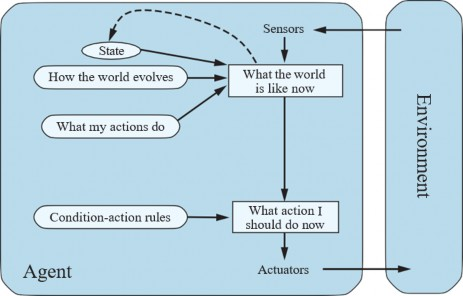
Việc cập nhật thông tin trạng thái nội bộ này theo thời gian đòi hỏi hai loại kiến thức phải được mã hóa trong chương trình tác nhân dưới một dạng nào đó. Đầu tiên, chúng ta cần một số thông tin về cách thế giới thay đổi theo thời gian, có thể chia đại khái thành hai phần: ảnh hưởng của các hành động của tác nhân và cách thế giới tự phát triển độc lập với tác nhân. Ví dụ, khi tác nhân quay vô lăng theo chiều kim đồng hồ, xe rẽ sang phải, và khi trời mưa, camera của xe có thể bị ướt. Kiến thức này về “cách thế giới hoạt động”—dù được triển khai trong các mạch Boolean đơn giản hay trong các lý thuyết khoa học hoàn chỉnh—được gọi là mô hình chuyển tiếp (transition model) của thế giới.
Thứ hai, chúng ta cần một số thông tin về cách trạng thái của thế giới được phản ánh trong các tri giác của tác nhân. Ví dụ, khi chiếc xe phía trước bắt đầu phanh, một hoặc nhiều vùng màu đỏ được chiếu sáng xuất hiện trong hình ảnh camera phía trước, và, khi camera bị ướt, các vật thể hình giọt nước xuất hiện trong hình ảnh che khuất một phần đường. Loại kiến thức này được gọi là mô hình(sensor model).
Cùng nhau, mô hình chuyển tiếp và mô hình cảm biến cho phép một tác nhân theo dõi trạng thái của thế giới—trong chừng mực có thể với những hạn chế của cảm biến của tác nhân. Một tác nhân sử dụng các mô hình như vậy được gọi là tác nhân dựa trên mô hình (model-based agent).
Hình 2.11 đưa ra cấu trúc của tác nhân phản xạ dựa trên mô hình với trạng thái nội bộ, cho thấy cách tri giác hiện tại được kết hợp với trạng thái nội bộ cũ để tạo ra mô tả cập nhật của trạng thái hiện tại, dựa trên mô hình của tác nhân về cách thế giới hoạt động. Chương trình tác nhân được thể hiện trong Hình 2.12. Phần thú vị là hàm UPDATE-STATE, chịu trách nhiệm tạo mô tả trạng thái nội bộ mới. Chi tiết về cách các mô hình và trạng thái được biểu diễn khác nhau rất nhiều tùy thuộc vào loại môi trường và công nghệ cụ thể được sử dụng trong thiết kế tác nhân.
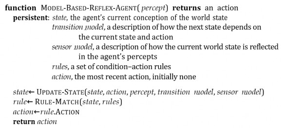
Bất kể loại biểu diễn nào được sử dụng, hiếm khi tác nhân có thể xác định chính xác trạng thái hiện tại của một môi trường có thể quan sát một phần. Thay vào đó, ô được dán nhãn “thế giới bây giờ như thế nào” (Hình 2.11) đại diện cho “đoán tốt nhất” của tác nhân (hoặc đôi khi là những “đoán tốt nhất,” nếu tác nhân cân nhắc nhiều khả năng). Ví dụ, một chiếc taxi tự động có thể không thể nhìn thấy xung quanh chiếc xe tải lớn đã dừng lại phía trước nó và chỉ có thể đoán về những gì có thể đang gây ra sự tắc nghẽn. Do đó, sự không chắc chắn về trạng thái hiện tại có thể là không thể tránh khỏi, nhưng tác nhân vẫn phải đưa ra quyết định.
Tác nhân dựa trên mục tiêu
Biết một cái gì đó về trạng thái hiện tại của môi trường không phải lúc nào cũng đủ để quyết định phải làm gì. Ví dụ, tại một ngã tư đường, taxi có thể rẽ trái, rẽ phải hoặc đi thẳng. Quyết định đúng đắn phụ thuộc vào nơi taxi đang cố gắng đến. Nói cách khác, cũng như một mô tả trạng thái hiện tại, tác nhân cần một số loại thông tin mục tiêu (goal) mô tả các tình huống mong muốn—ví dụ, đang ở một điểm đến cụ thể. Chương trình tác nhân có thể kết hợp điều này với mô hình (cùng thông tin đã được sử dụng trong tác nhân phản xạ dựa trên mô hình) để chọn các hành động đạt được mục tiêu. Hình 2.13 cho thấy cấu trúc của tác nhân dựa trên mục tiêu.
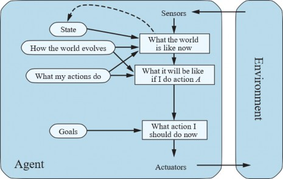
Đôi khi việc lựa chọn hành động dựa trên mục tiêu là đơn giản—ví dụ, khi việc thỏa mãn mục tiêu là kết quả ngay lập tức từ một hành động duy nhất. Đôi khi nó sẽ phức tạp hơn—ví dụ, khi tác nhân phải xem xét các chuỗi ngoặt và rẽ dài để tìm cách đạt được mục tiêu. Tìm kiếm (các Chương 3, 4, và 6) và lập kế hoạch (Chương 11) là các tiểu lĩnh vực của AI dành cho việc tìm kiếm các chuỗi hành động đạt được mục tiêu của tác nhân.
Lưu ý rằng việc ra quyết định kiểu này về cơ bản khác với các quy tắc điều kiện-hành động đã mô tả trước đó, ở chỗ nó liên quan đến việc xem xét tương lai—cả “Điều gì sẽ xảy ra nếu tôi làm điều này?” và “Điều đó có làm tôi hài lòng không?” Trong các thiết kế tác nhân phản xạ, thông tin này không được biểu diễn một cách rõ ràng, bởi vì các quy tắc tích hợp ánh xạ trực tiếp từ tri giác đến hành động. Tác nhân phản xạ phanh khi nó thấy đèn phanh, chấm hết. Nó không biết tại sao. Một tác nhân dựa trên mục tiêu phanh khi nó thấy đèn phanh bởi vì đó là hành động duy nhất mà nó dự đoán sẽ đạt được mục tiêu không đâm vào các xe khác.
Mặc dù tác nhân dựa trên mục tiêu có vẻ kém hiệu quả hơn, nó linh hoạt hơn vì kiến thức hỗ trợ các quyết định của nó được biểu diễn một cách rõ ràng và có thể được sửa đổi. Ví dụ, hành vi của một tác nhân dựa trên mục tiêu có thể dễ dàng thay đổi để đi đến một điểm đến khác, chỉ bằng cách chỉ định điểm đến đó là mục tiêu. Các quy tắc của tác nhân phản xạ về thời điểm rẽ và thời điểm đi thẳng sẽ chỉ hoạt động cho một điểm đến duy nhất; chúng phải được thay thế hoàn toàn để đi đến một nơi mới.
Tác nhân dựa trên tiện ích
Mục tiêu một mình không đủ để tạo ra hành vi chất lượng cao trong hầu hết các môi trường. Ví dụ, nhiều chuỗi hành động sẽ đưa taxi đến đích (do đó đạt được mục tiêu), nhưng một số nhanh hơn, an toàn hơn, đáng tin cậy hơn hoặc rẻ hơn những chuỗi khác. Các mục tiêu chỉ cung cấp một sự phân biệt nhị phân thô giữa các trạng thái “hạnh phúc” và “không hạnh phúc”. Một thước đo hiệu suất tổng quát hơn nên cho phép so sánh các trạng thái thế giới khác nhau dựa trên mức độ hạnh phúc mà chúng mang lại cho tác nhân. Vì “hạnh phúc” nghe có vẻ không khoa học lắm, các nhà kinh tế và nhà khoa học máy tính sử dụng thuật ngữ tiện ích (utility).
Chúng ta đã thấy rằng một thước đo hiệu suất chỉ định một điểm số cho bất kỳ chuỗi trạng thái môi trường nào, vì vậy nó có thể dễ dàng phân biệt giữa các cách đến đích của taxi mong muốn hơn và kém hơn. Hàm tiện ích (utility function) của một tác nhân về cơ bản là sự nội hóa của thước đo hiệu suất. Với điều kiện hàm tiện ích nội bộ và thước đo hiệu suất bên ngoài đồng thuận, một tác nhân chọn các hành động để tối đa hóa tiện ích của nó sẽ là hợp lý theo thước đo hiệu suất bên ngoài.
Hãy nhấn mạnh lại rằng đây không phải là cách duy nhất để trở nên hợp lý—chúng ta đã thấy một chương trình tác nhân hợp lý cho thế giới máy hút bụi (Hình 2.8) mà không biết hàm tiện ích của nó là gì—nhưng, giống như các tác nhân dựa trên mục tiêu, một tác nhân dựa trên tiện ích có nhiều lợi thế về tính linh hoạt và học hỏi. Hơn nữa, trong hai loại trường hợp, các mục tiêu là không đủ nhưng một tác nhân dựa trên tiện ích vẫn có thể đưa ra các quyết định hợp lý. Thứ nhất, khi có các mục tiêu xung đột, chỉ một số mục tiêu có thể đạt được (ví dụ: tốc độ và an toàn), hàm tiện ích sẽ xác định sự đánh đổi thích hợp. Thứ hai, khi có một số mục tiêu mà tác nhân có thể nhắm tới, không mục tiêu nào có thể đạt được một cách chắc chắn, tiện ích cung cấp một cách để cân nhắc khả năng thành công so với tầm quan trọng của các mục tiêu.
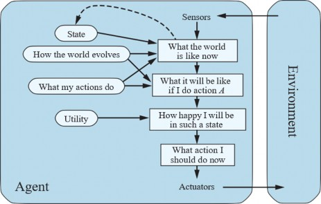
Khả năng quan sát một phần và tính không xác định là phổ biến trong thế giới thực, và do đó, việc ra quyết định trong điều kiện không chắc chắn cũng vậy. Về mặt kỹ thuật, một tác nhân dựa trên tiện ích hợp lý chọn hành động tối đa hóa tiện ích kỳ vọng (expected utility) của các kết quả hành động—nghĩa là, tiện ích mà tác nhân mong đợi nhận được, tính trung bình, với xác suất và tiện ích của mỗi kết quả. (Phụ lục A định nghĩa kỳ vọng chính xác hơn.) Trong Chương 15, chúng ta sẽ chỉ ra rằng bất kỳ tác nhân hợp lý nào cũng phải hành động như thể nó sở hữu một hàm tiện ích mà nó cố gắng tối đa hóa giá trị kỳ vọng. Một tác nhân sở hữu một hàm tiện ích rõ ràng có thể đưa ra các quyết định hợp lý với một thuật toán đa năng không phụ thuộc vào hàm tiện ích cụ thể đang được tối đa hóa. Bằng cách này, định nghĩa “toàn cầu” về tính hợp lý—chỉ định là hợp lý những hàm tác nhân có hiệu suất cao nhất—được biến thành một ràng buộc “cục bộ” đối với các thiết kế tác nhân hợp lý có thể được thể hiện trong một chương trình đơn giản.
Cấu trúc tác nhân dựa trên tiện ích xuất hiện trong Hình 2.14. Các chương trình tác nhân dựa trên tiện ích xuất hiện trong Chương 15 và 16, nơi chúng ta thiết kế các tác nhân ra quyết định phải xử lý sự không chắc chắn vốn có trong các môi trường không xác định hoặc có thể quan sát một phần. Việc ra quyết định trong môi trường đa tác nhân cũng được nghiên cứu trong khuôn khổ của lý thuyết tiện ích, như đã giải thích trong Chương 17.
Tại thời điểm này, người đọc có thể đang tự hỏi, “Có đơn giản vậy không? Chúng ta chỉ cần xây dựng các tác nhân tối đa hóa tiện ích kỳ vọng là xong?” Đúng là các tác nhân như vậy sẽ thông minh, nhưng nó không hề đơn giản. Một tác nhân dựa trên tiện ích phải mô hình hóa và theo dõi môi trường của nó, những nhiệm vụ đã liên quan đến rất nhiều nghiên cứu về nhận thức, biểu diễn,
suy luận và học hỏi. Kết quả của nghiên cứu này lấp đầy nhiều chương của cuốn sách này. Việc chọn chuỗi hành động tối đa hóa tiện ích cũng là một nhiệm vụ khó khăn, đòi hỏi các thuật toán khéo léo lấp đầy thêm một số chương nữa. Ngay cả với các thuật toán này, tính hợp lý hoàn hảo thường không thể đạt được trong thực tế vì độ phức tạp tính toán, như chúng ta đã lưu ý trong Chương 1. Chúng ta cũng lưu ý rằng không phải tất cả các tác nhân dựa trên tiện ích đều dựa trên mô hình; chúng ta sẽ thấy trong Chương 23 và 26 rằng một tác nhân không dựa trên mô hình(model-free agent) có thể học được hành động nào là tốt nhất trong một tình huống cụ thể mà không cần học chính xác hành động đó thay đổi môi trường như thế nào.
Cuối cùng, tất cả những điều này giả định rằng nhà thiết kế có thể chỉ định hàm tiện ích một cách chính xác; Chương 16, 17 và 23 xem xét vấn đề các hàm tiện ích không xác định một cách sâu sắc hơn.
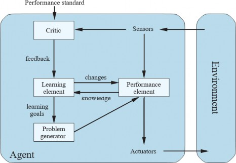
Tác nhân học tập
Chúng ta đã mô tả các chương trình tác nhân với các phương pháp khác nhau để chọn hành động. Cho đến nay, chúng ta vẫn chưa giải thích cách các chương trình tác nhân được tạo ra. Trong bài báo nổi tiếng ban đầu của mình, Turing (1950) xem xét ý tưởng thực sự lập trình thủ công các cỗ máy thông minh của mình. Ông ước tính công việc này có thể mất bao nhiêu và kết luận, “Một phương pháp nhanh hơn có vẻ là mong muốn.” Phương pháp ông đề xuất là xây dựng các máy học tập và sau đó dạy chúng. Trong nhiều lĩnh vực của AI, đây hiện là phương pháp ưu tiên để tạo ra
các hệ thống tiên tiến. Bất kỳ loại tác nhân nào (dựa trên mô hình, dựa trên mục tiêu, dựa trên tiện
ích, v.v.) đều có thể được xây dựng dưới dạng một tác nhân học tập (learning agent) (hoặc không).
Học tập có một lợi thế khác, như chúng ta đã lưu ý trước đó: nó cho phép tác nhân hoạt động trong các môi trường ban đầu không xác định và trở nên có năng lực hơn so với kiến thức ban đầu của nó. Trong phần này, chúng ta sẽ giới thiệu ngắn gọn các ý tưởng chính của tác nhân học tập. Trong suốt cuốn sách, chúng ta sẽ bình luận về các cơ hội và phương pháp học tập trong các loại tác nhân cụ thể. Các Chương 19, 21, 22 và 23 đi sâu hơn nhiều vào bản thân các thuật toán học tập.
Một tác nhân học tập có thể được chia thành bốn thành phần khái niệm, như thể hiện trong Hình
2.15. Sự khác biệt quan trọng nhất là giữa phần tử học tập (learning element), chịu trách nhiệm thực hiện các cải tiến, và phần tử hiệu suất (performance element), chịu trách nhiệm chọn các hành động bên ngoài. Phần tử hiệu suất là những gì chúng ta đã coi là toàn bộ tác nhân: nó nhận tri giác và quyết định các hành động. Phần tử học tập sử dụng phản hồi từ nhà phê bình (critic) về việc tác nhân đang hoạt động như thế nào và xác định cách phần tử hiệu suất nên được sửa đổi để hoạt động tốt hơn trong tương lai.
Thiết kế của phần tử học tập phụ thuộc rất nhiều vào thiết kế của phần tử hiệu suất. Khi cố gắng thiết kế một tác nhân học một khả năng nhất định, câu hỏi đầu tiên không phải là “Làm thế nào tôi sẽ khiến nó học được điều này?” mà là “Tác nhân của tôi sẽ sử dụng loại phần tử hiệu suất nào để làm điều này khi nó đã học được cách?” Với một thiết kế cho phần tử hiệu suất, các cơ chế học tập có thể được xây dựng để cải thiện mọi phần của tác nhân.
Nhà phê bình cho phần tử học tập biết tác nhân đang hoạt động tốt như thế nào so với một tiêu(performance standard) cố định. Nhà phê bình là cần thiết vì bản thân các tri giác không cung cấp dấu hiệu nào về sự thành công của tác nhân. Ví dụ, một chương trình cờ vua có thể nhận một tri giác cho thấy nó đã chiếu bí đối thủ, nhưng nó cần một tiêu chuẩn hiệu suất để biết rằng đây là một điều tốt; bản thân tri giác không nói lên điều đó. Điều quan trọng là tiêu chuẩn hiệu suất phải được cố định. Về mặt khái niệm, người ta nên coi nó nằm ngoài tác nhân hoàn toàn vì tác nhân không được sửa đổi nó để phù hợp với hành vi của chính nó.
Thành phần cuối cùng của tác nhân học tập là bộ tạo vấn đề (problem generator). Nó chịu trách nhiệm đề xuất các hành động sẽ dẫn đến những trải nghiệm mới và mang tính thông tin. Nếu phần tử hiệu suất làm theo cách của nó, nó sẽ tiếp tục thực hiện các hành động tốt nhất, với những gì nó biết, nhưng nếu tác nhân sẵn sàng khám phá một chút và thực hiện một số hành động có thể là không tối ưu trong thời gian ngắn, nó có thể khám phá ra các hành động tốt hơn nhiều trong thời gian dài. Công việc của bộ tạo vấn đề là đề xuất các hành động khám phá này. Đây là những gì các nhà khoa học làm khi họ thực hiện các thí nghiệm. Galileo không nghĩ rằng việc thả đá từ đỉnh tháp ở Pisa là có giá trị tự thân. Ông không cố gắng làm vỡ những tảng đá hay sửa đổi bộ não của những người đi bộ không may mắn. Mục đích của ông là sửa đổi bộ não của chính mình bằng cách xác định một lý thuyết tốt hơn về chuyển động của các vật thể.
Phần tử học tập có thể thực hiện các thay đổi đối với bất kỳ thành phần “kiến thức” nào được thể hiện trong các sơ đồ tác nhân (Hình 2.9, 2.11, 2.13 và 2.14). Các trường hợp đơn giản nhất liên quan đến việc học trực tiếp từ chuỗi tri giác. Quan sát các cặp trạng thái liên tiếp của môi trường có thể cho phép tác nhân học “Các hành động của tôi làm gì” và “Thế giới phát triển như thế nào” để đáp lại các hành động của nó. Ví dụ, nếu chiếc taxi tự động tạo ra một áp lực phanh nhất định khi lái xe trên đường ướt, thì nó sẽ sớm tìm ra mức giảm tốc thực sự đạt được là bao nhiêu và liệu nó có bị trượt khỏi đường không. Bộ tạo vấn đề có thể xác định một số phần nhất định của mô
hình cần được cải thiện và đề xuất các thí nghiệm, chẳng hạn như thử phanh trên các bề mặt đường khác nhau trong các điều kiện khác nhau.
Cải thiện các thành phần mô hình của một tác nhân dựa trên mô hình để chúng phù hợp hơn với thực tế gần như luôn là một ý tưởng hay, bất kể tiêu chuẩn hiệu suất bên ngoài. (Trong một số trường hợp, từ quan điểm tính toán, tốt hơn là có một mô hình đơn giản nhưng hơi không chính xác hơn là một mô hình hoàn hảo nhưng cực kỳ phức tạp.) Thông tin từ tiêu chuẩn bên ngoài là cần thiết khi cố gắng học một thành phần phản xạ hoặc một hàm tiện ích.
Ví dụ, giả sử tác nhân lái taxi không nhận được tiền boa từ những hành khách đã bị xóc nảy trong suốt chuyến đi. Tiêu chuẩn hiệu suất bên ngoài phải thông báo cho tác nhân rằng việc mất tiền boa là một đóng góp tiêu cực vào hiệu suất tổng thể của nó; sau đó tác nhân có thể học được rằng những hành động cơ động mạnh mẽ không đóng góp vào tiện ích của chính nó. Theo một nghĩa nào đó, tiêu chuẩn hiệu suất phân biệt một phần của tri giác đến là một phần thưởng (reward) (hoặc hình phạt (penalty)) cung cấp phản hồi trực tiếp về chất lượng hành vi của tác nhân. Các tiêu chuẩn hiệu suất được lập trình sẵn như đau đớn và đói ở động vật có thể được hiểu theo cách này.
Tổng quát hơn, các lựa chọn của con người có thể cung cấp thông tin về sở thích của con người. Ví dụ, giả sử taxi không biết rằng mọi người thường không thích tiếng ồn lớn, và quyết định thổi còi liên tục như một cách để đảm bảo người đi bộ biết nó đang đến. Hành vi tiếp theo của con người—bịt tai, sử dụng ngôn ngữ xấu, và có thể cắt dây còi—sẽ cung cấp bằng chứng cho tác nhân để cập nhật hàm tiện ích của nó. Vấn đề này được thảo luận thêm trong Chương 23.
Tóm lại, các tác nhân có nhiều thành phần khác nhau, và các thành phần đó có thể được biểu diễn theo nhiều cách trong chương trình tác nhân, vì vậy có vẻ như có nhiều loại phương pháp học tập. Tuy nhiên, có một chủ đề thống nhất duy nhất. Học tập trong các tác nhân thông minh có thể được tóm tắt là một quá trình sửa đổi từng thành phần của tác nhân để đưa các thành phần đó phù hợp hơn với thông tin phản hồi có sẵn, từ đó cải thiện hiệu suất tổng thể của tác nhân.
Cách hoạt động của các thành phần trong chương trình tác nhân
Chúng ta đã mô tả các chương trình tác nhân (một cách tổng quát) bao gồm các thành phần khác nhau, với chức năng là trả lời các câu hỏi như: “Thế giới bây giờ như thế nào?” “Hành động nào tôi nên làm bây giờ?” “Các hành động của tôi làm gì?” Câu hỏi tiếp theo đối với một sinh viên AI là, “Làm thế quái nào mà các thành phần này hoạt động?” Phải mất khoảng một nghìn trang để bắt đầu trả lời câu hỏi đó một cách chính xác, nhưng ở đây chúng ta muốn thu hút sự chú ý của người đọc đến một số điểm khác biệt cơ bản giữa các cách khác nhau mà các thành phần có thể biểu diễn môi trường mà tác nhân cư trú.
Nói một cách đại khái, chúng ta có thể đặt các biểu diễn dọc theo một trục có độ phức tạp và sức mạnh biểu đạt tăng dần—nguyên tử (atomic), phân tách (factored) và có cấu trúc (structured). Để minh họa những ý tưởng này, sẽ hữu ích khi xem xét một thành phần tác nhân cụ thể, chẳng hạn như thành phần xử lý “Các hành động của tôi làm gì.” Thành phần này mô tả những thay đổi có thể xảy ra trong môi trường do kết quả của việc thực hiện một hành động, và Hình 2.16 cung cấp các mô tả sơ đồ về cách các chuyển đổi đó có thể được biểu diễn.
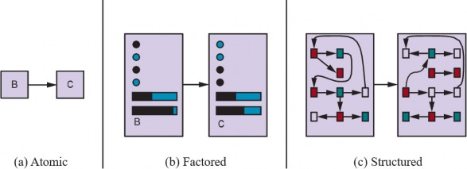
Trong biểu diễn nguyên tử (atomic representation), mỗi trạng thái của thế giới là không thể chia cắt—nó không có cấu trúc nội bộ. Hãy xem xét nhiệm vụ tìm một tuyến đường lái xe từ đầu này sang đầu kia của một quốc gia thông qua một chuỗi các thành phố (chúng ta giải quyết vấn đề này trong Hình 3.1 ở trang 82). Để giải quyết vấn đề này, có thể đủ để giảm trạng thái của thế giới xuống chỉ còn tên của thành phố chúng ta đang ở—một nguyên tử kiến thức duy nhất, một “hộp đen” mà thuộc tính có thể nhận thấy duy nhất của nó là giống hoặc khác với một hộp đen khác. Các thuật toán tiêu chuẩn làm nền tảng cho tìm kiếm và chơi trò chơi (Chương 3, 4 và 6), mô hình Markov ẩn (Chương 14) và quá trình quyết định Markov (Chương 16) đều hoạt động với các biểu diễn nguyên tử.
Một biểu diễn phân tách (factored representation) chia mỗi trạng thái thành một tập hợp các biến hoặc thuộc tính cố định, mỗi thuộc tính có thể có một giá trị. Hãy xem xét một mô tả có độ chính xác cao hơn cho cùng một vấn đề lái xe, nơi chúng ta cần quan tâm nhiều hơn là chỉ vị trí nguyên tử trong thành phố này hay thành phố khác; chúng ta có thể cần chú ý đến lượng xăng trong bình, tọa độ GPS hiện tại của chúng ta, liệu đèn cảnh báo dầu có hoạt động hay không, chúng ta có bao nhiêu tiền cho phí cầu đường, đài phát thanh nào đang bật, v.v. Trong khi hai trạng thái nguyên tử khác nhau không có gì chung—chúng chỉ là những hộp đen khác nhau—hai trạng thái phân tách khác nhau có thể chia sẻ một số thuộc tính (chẳng hạn như ở một vị trí GPS cụ thể nào đó) và không chia sẻ những thuộc tính khác (chẳng hạn như có nhiều xăng hoặc không có xăng); điều này giúp việc tìm ra cách biến trạng thái này thành trạng thái khác dễ dàng hơn nhiều. Nhiều lĩnh vực quan trọng của AI dựa trên các biểu diễn phân tách, bao gồm các thuật toán thỏa mãn ràng buộc (Chương 5), logic mệnh đề (Chương 7), lập kế hoạch (Chương 11), mạng lưới Bayesian (các Chương 12, 13, 14, 15 và 18), và các thuật toán học máy khác nhau.
Đối với nhiều mục đích, chúng ta cần hiểu thế giới có những thứ liên quan đến nhau, không chỉ là các biến với các giá trị. Ví dụ, chúng ta có thể nhận thấy một chiếc xe tải lớn phía trước chúng ta
đang lùi vào đường lái xe của một trang trại bò sữa, nhưng một con bò đi lạc đang chắn đường đi của chiếc xe tải. Một biểu diễn phân tách khó có thể được trang bị trước với thuộc tính XeTaiPhiaTruocDangLuiVaoDuongLaiXeTrangTraiBiChanBoiBoDiLac với giá trị đúng hoặc sai. Thay vào đó, chúng ta sẽ cần một biểu diễn có cấu trúc (structured representation), trong đó các đối tượng như bò và xe tải cùng các mối quan hệ đa dạng và thay đổi của chúng có thể được mô tả một cách rõ ràng (xem Hình 2.16(c)). Các biểu diễn có cấu trúc làm nền tảng cho các cơ sở dữ liệu quan hệ và logic bậc nhất (các Chương 8, 9 và 10), các mô hình xác suất bậc nhất (Chương 18), và phần lớn sự hiểu biết ngôn ngữ tự nhiên (các Chương 24 và 25). Trên thực tế, phần lớn những gì con người thể hiện bằng ngôn ngữ tự nhiên liên quan đến các đối tượng và mối quan hệ của chúng.
Như chúng ta đã đề cập trước đó, trục mà các biểu diễn nguyên tử, phân tách và có cấu trúc nằm trên đó là trục biểu đạt (expressiveness) tăng dần. Nói một cách đại khái, một biểu diễn biểu đạt hơn có thể nắm bắt, ít nhất là một cách ngắn gọn, mọi thứ mà một biểu diễn kém biểu đạt hơn có thể nắm bắt, cộng thêm một số nữa. Thông thường, ngôn ngữ biểu đạt hơn ngắn gọn hơn nhiều; ví dụ, các quy tắc của cờ vua có thể được viết trong một hoặc hai trang của một ngôn ngữ biểu diễn có cấu trúc như logic bậc nhất nhưng yêu cầu hàng nghìn trang khi được viết trong một ngôn ngữ biểu diễn phân tách như logic mệnh đề và khoảng 1038 trang khi được viết trong một ngôn ngữ nguyên tử như ngôn ngữ của máy trạng thái hữu hạn. Mặt khác, suy luận và học tập trở nên phức tạp hơn khi sức mạnh biểu đạt của biểu diễn tăng lên. Để đạt được lợi ích của các biểu diễn biểu đạt trong khi tránh những nhược điểm của chúng, các hệ thống thông minh cho thế giới thực có thể cần hoạt động đồng thời ở tất cả các điểm dọc theo trục.
Một trục khác cho biểu diễn liên quan đến việc ánh xạ các khái niệm đến các vị trí trong bộ nhớ vật lý, dù trong máy tính hay trong não. Nếu có một ánh xạ một-đối-một giữa các khái niệm và các vị trí bộ nhớ, chúng ta gọi đó là biểu diễn cục bộ (localist representation). Mặt khác, nếu biểu diễn của một khái niệm được trải rộng trên nhiều vị trí bộ nhớ, và mỗi vị trí bộ nhớ được sử dụng như một phần của biểu diễn của nhiều khái niệm khác nhau, chúng ta gọi đó là biểu diễn phân(distributed representation). Biểu diễn phân tán mạnh mẽ hơn trước nhiễu và mất thông tin. Với một biểu diễn cục bộ, ánh xạ từ khái niệm đến vị trí bộ nhớ là tùy ý, và nếu một lỗi truyền tải làm méo một vài bit, chúng ta có thể nhầm lẫn từ Truck (xe tải) với khái niệm không liên quan Truce (đình chiến). Nhưng với một biểu diễn phân tán, bạn có thể nghĩ mỗi khái niệm đại diện cho một điểm trong không gian đa chiều, và nếu bạn làm méo một vài bit, bạn di chuyển đến một điểm gần đó trong không gian đó, điểm đó sẽ có ý nghĩa tương tự.
Tóm tắt
Chương này là một chuyến tham quan lốc xoáy về AI, mà chúng ta đã hình dung là khoa học về thiết kế tác nhân. Các điểm chính cần nhớ là:
Một tác nhân là một cái gì đó cảm nhận và hành động trong một môi trường. Hàm táccho một tác nhân chỉ định hành động được thực hiện bởi tác nhân để đáp lại bất kỳ chuỗi tri giác nào.
Một đặc tả môi trường tác vụ bao gồm thước đo hiệu suất, môi trường bên ngoài, các bộ truyền động và các cảm biến. Khi thiết kế một tác nhân, bước đầu tiên phải luôn là đặc tả môi trường tác vụ một cách đầy đủ nhất có thể.
Môi trường tác vụ khác nhau dọc theo một số chiều quan trọng. Chúng có thể là có thể quan sát đầy đủ hoặc một phần, đơn tác nhân hoặc đa tác nhân, xác định hoặc không xác định, tập rời rạc hoặc tuần tự, tĩnh hoặc động, rời rạc hoặc liên tục, và đã biết hoặc chưa biết.
Trong các trường hợp thước đo hiệu suất không xác định hoặc khó chỉ định một cách chính xác, có một rủi ro đáng kể là tác nhân tối ưu hóa mục tiêu sai. Trong những trường hợp như vậy, thiết kế tác nhân nên phản ánh sự không chắc chắn về mục tiêu thực sự.
Tất cả các tác nhân có thể cải thiện hiệu suất của chúng thông qua học tập.
Ghi chú Thư mục và Lịch sử
Vai trò trung tâm của hành động trong trí thông minh—khái niệm về lý luận thực tiễn—có từ ít nhất là thời Đạo đức học Nicomachean của Aristotle. Lý luận thực tiễn cũng là chủ đề của bài báo có ảnh hưởng của McCarthy “Programs with Common Sense” (1958). Các lĩnh vực robot học và lý thuyết điều khiển, về bản chất của chúng, chủ yếu liên quan đến các tác nhân vật lý. Khái niệm bộ điều khiển (controller) trong lý thuyết điều khiển giống hệt với khái niệm tác nhân trong AI. Có lẽ đáng ngạc nhiên, AI đã tập trung trong phần lớn lịch sử của nó vào các thành phần cô lập của tác nhân—hệ thống trả lời câu hỏi, chứng minh định lý, hệ thống thị giác, v.v.—thay vì toàn bộ tác nhân. Cuộc thảo luận về các tác nhân trong văn bản của Genesereth và Nilsson (1987) là một ngoại lệ có ảnh hưởng. Quan điểm toàn tác nhân hiện nay được chấp nhận rộng rãi và là một chủ đề trung tâm trong các văn bản gần đây (Padgham và Winikoff, 2004; Jones, 2007; Poole và Mackworth, 2017).
Chương 1 đã truy tìm nguồn gốc của khái niệm hợp lý trong triết học và kinh tế học. Trong AI, khái niệm này chỉ có sự quan tâm ngoại vi cho đến giữa những năm 1980, khi nó bắt đầu thấm nhuần nhiều cuộc thảo luận về nền tảng kỹ thuật thích hợp của lĩnh vực này. Một bài báo của Jon Doyle (1983) đã dự đoán rằng thiết kế tác nhân hợp lý sẽ được coi là sứ mệnh cốt lõi của AI, trong khi các chủ đề phổ biến khác sẽ tách ra để hình thành các ngành học mới.
Sự chú ý cẩn thận đến các thuộc tính của môi trường và hậu quả của chúng đối với thiết kế tác nhân hợp lý là rõ ràng nhất trong truyền thống lý thuyết điều khiển—ví dụ, các hệ thống điều khiển cổ điển (Dorf và Bishop, 2004; Kirk, 2004) xử lý các môi trường có thể quan sát đầy đủ, xác định; điều khiển tối ưu ngẫu nhiên (Kumar và Varaiya, 1986; Bertsekas và Shreve, 2007) xử lý các môi trường có thể quan sát một phần, ngẫu nhiên; và điều khiển lai (Henzinger và Sastry, 1998; Cassandras và Lygeros, 2006) xử lý các môi trường chứa cả các yếu tố rời rạc và liên tục. Sự khác
biệt giữa các môi trường có thể quan sát đầy đủ và một phần cũng là trung tâm trong tài liệu lập trình động được phát triển trong lĩnh vực nghiên cứu hoạt động (Puterman, 1994), mà chúng ta sẽ thảo luận trong Chương 16.
Mặc dù các tác nhân phản xạ đơn giản là trung tâm của tâm lý học hành vi (xem Chương 1), hầu hết các nhà nghiên cứu AI đều coi chúng quá đơn giản để cung cấp nhiều đòn bẩy. (Rosenschein (1985) và Brooks (1986) đã đặt câu hỏi về giả định này; xem Chương 26.) Rất nhiều công việc đã được thực hiện để tìm các thuật toán hiệu quả để theo dõi các môi trường phức tạp (Bar-Shalom et al., 2001; Choset et al., 2005; Simon, 2006), hầu hết trong số đó trong môi trường xác suất. Các tác nhân dựa trên mục tiêu được giả định trong mọi thứ từ quan điểm lý luận thực tiễn của Aristotle đến các bài báo đầu tiên của McCarthy về AI logic. Shakey the Robot (Fikes và Nilsson, 1971; Nilsson, 1984) là hiện thân robot đầu tiên của một tác nhân logic, dựa trên mục tiêu. Một phân tích logic đầy đủ về các tác nhân dựa trên mục tiêu xuất hiện trong Genesereth và Nilsson (1987), và một phương pháp lập trình dựa trên mục tiêu được gọi là lập trình hướng tác nhân (agent-oriented programming) đã được Shoham (1993) phát triển. Cách tiếp cận dựa trên tác nhân hiện cực kỳ phổ biến trong kỹ thuật phần mềm (Ciancarini và Wooldridge, 2001). Nó cũng đã xâm nhập vào lĩnh vực hệ điều hành, nơi tính toán tự trị (autonomic computing) đề cập đến các hệ thống máy tính và mạng lưới tự giám sát và điều khiển bằng một vòng lặp cảm nhận–hành động và các phương pháp học máy (Kephart và Chess, 2003). Lưu ý rằng một tập hợp các chương trình tác nhân được thiết kế để hoạt động tốt với nhau trong một môi trường đa tác nhân thực sự nhất thiết phải thể hiện tính mô-đun—các chương trình không chia sẻ trạng thái nội bộ và giao tiếp với nhau chỉ thông qua môi trường—việc thiết kế chương trình tác nhân của một tác nhân duy nhất như một tập hợp các tác nhân phụ tự trị là điều phổ biến trong lĩnh vực hệ thống đa tác nhân. Trong một số trường hợp, người ta thậm chí có thể chứng minh rằng hệ thống kết quả đưa ra các giải pháp tối ưu tương tự như một thiết kế nguyên khối.
Quan điểm dựa trên mục tiêu của các tác nhân cũng chi phối truyền thống tâm lý học nhận thức trong lĩnh vực giải quyết vấn đề, bắt đầu với tác phẩm có ảnh hưởng lớn Human Problem Solving(Newell và Simon, 1972) và tiếp tục qua tất cả các công trình sau này của Newell (Newell, 1990). Các mục tiêu, được phân tích thêm là mong muốn (chung) và ý định (đang được theo đuổi), là trung tâm của lý thuyết tác nhân có ảnh hưởng được phát triển bởi Michael Bratman (1987).
Như đã lưu ý trong Chương 1, sự phát triển của lý thuyết tiện ích như một cơ sở cho hành vi hợp lý có từ hàng trăm năm trước. Trong AI, nghiên cứu ban đầu tránh tiện ích để ủng hộ mục tiêu, với một số ngoại lệ (Feldman và Sproull, 1977). Sự hồi sinh của sự quan tâm đến các phương pháp xác suất vào những năm 1980 đã dẫn đến việc chấp nhận tối đa hóa tiện ích kỳ vọng là khuôn khổ tổng quát nhất cho việc ra quyết định (Horvitz et al., 1988). Văn bản của Pearl (1988) là văn bản đầu tiên trong AI bao quát lý thuyết xác suất và tiện ích một cách sâu sắc; việc trình bày các phương pháp thực tiễn để suy luận và ra quyết định trong điều kiện không chắc chắn của nó có lẽ là yếu tố lớn nhất trong sự thay đổi nhanh chóng sang các tác nhân dựa trên tiện ích vào những năm 1990 (xem Chương 15). Việc chính thức hóa học tăng cường trong một khuôn khổ lý thuyết quyết định cũng góp phần vào sự thay đổi này (Sutton, 1988). Đáng chú ý là, gần như tất cả nghiên cứu AI cho đến gần đây đều giả định rằng thước đo hiệu suất có thể được chỉ định chính xác và đúng đắn dưới dạng một hàm tiện ích hoặc hàm phần thưởng (Hadfield-Menell et al., 2017a; Russell, 2019).
Thiết kế chung cho các tác nhân học tập được miêu tả trong Hình 2.15 là kinh điển trong tài liệu học máy (Buchanan et al., 1978; Mitchell, 1997). Các ví dụ về thiết kế, như được thể hiện trong
các chương trình, có từ ít nhất là chương trình học chơi cờ đam của Arthur Samuel (1959, 1967). Các tác nhân học tập được thảo luận sâu trong các Chương 19, 21, 22 và 23.
Một số bài báo ban đầu về các cách tiếp cận dựa trên tác nhân được tập hợp bởi Huhns và Singh (1998) và Wooldridge và Rao (1999). Các văn bản về hệ thống đa tác nhân cung cấp một giới thiệu tốt về nhiều khía cạnh của thiết kế tác nhân (Weiss, 2000a; Wooldridge, 2009). Một số chuỗi hội nghị dành riêng cho các tác nhân bắt đầu vào những năm 1990, bao gồm Hội thảo Quốc tế về Lý thuyết, Kiến trúc và Ngôn ngữ Tác nhân (ATAL), Hội nghị Quốc tế về Tác nhân Tự trị (AGENTS) và Hội nghị Quốc tế về Hệ thống Đa Tác nhân (ICMAS). Năm 2002, ba hội nghị này sáp nhập để thành lập Hội nghị Liên hợp Quốc tế về Tác nhân Tự trị và Hệ thống Đa Tác nhân (AAMAS). Từ năm 2000 đến 2012, có các hội thảo hàng năm về Kỹ thuật Phần mềm Hướng Tác nhân (AOSE). Tạp chí Autonomous Agents and Multi-Agent Systems được thành lập năm 1998. Cuối cùng, Dung Beetle Ecology (Hanski và Cambefort, 1991) cung cấp rất nhiều thông tin thú vị về hành vi của bọ hung. YouTube có các video ghi lại hoạt động đầy cảm hứng của chúng.